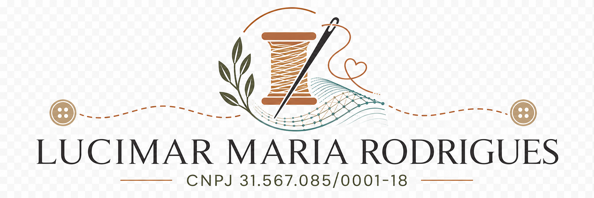

LUCIMAR MARIA RODRIGUES
Estoque de Confecção
Um espaço simples para registrar materiais, acompanhar mercadorias, imprimir etiquetas e reconhecer cada peça pelo seu código.
Da mesa de trabalho ao sistema: cada peça ganha nome, registro e caminho.